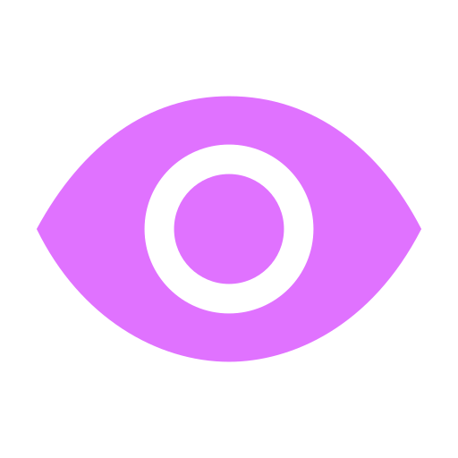
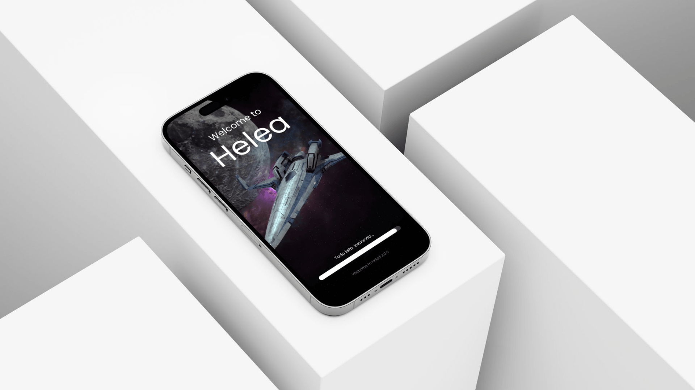
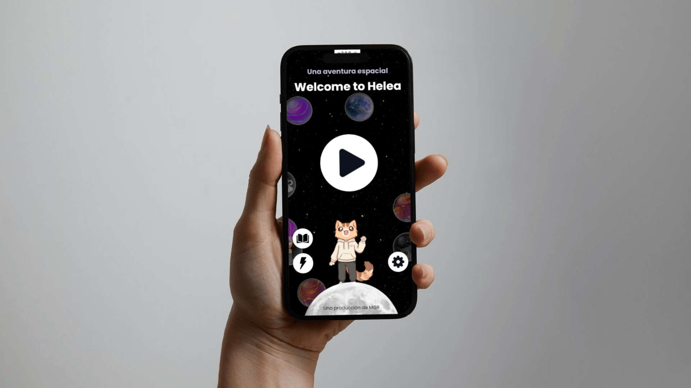
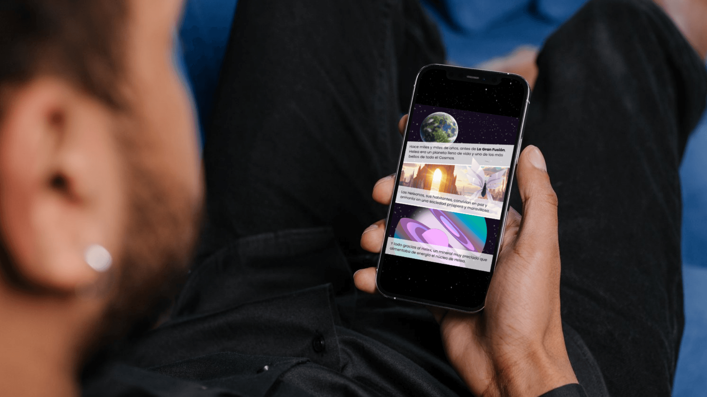
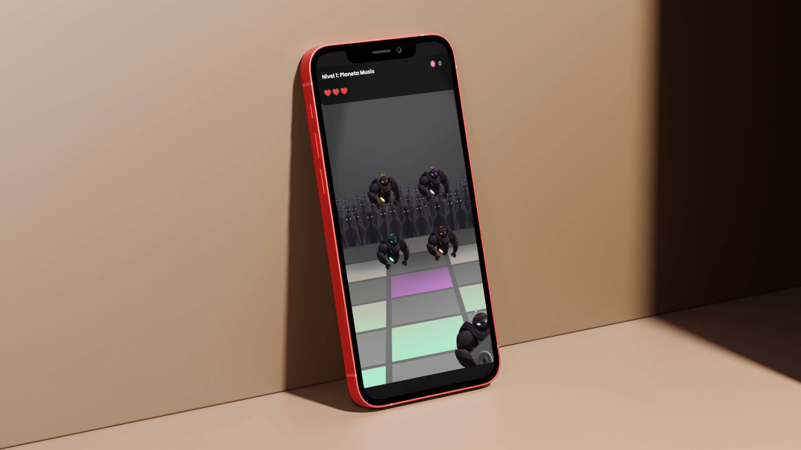

Proyecto: Welcome to Helea - Programación de Aplicación Web Interactiva y Minijuegos en JavaScript
OBJETIVO DEL PROYECTO
Ideación y desarrollo de un videojuego estilo 'indie' para dispositivos móviles basado en minijuegos. El proyecto incluye carga y precarga de assets, guardado de datos en caché y sistema de diálogos adaptable según el personaje seleccionado. Se trata de un proyecto personal sólido y completo que integra elementos audiovisuales (imágenes, vídeos, música y efectos de sonido) y una narrativa sencilla pero llamativa. El videojuego se desarrolla por niveles donde cada nivel presenta un desafío para el jugador. Los minijuegos combinan habilidad, rapidez visual, memoria y lógica, y están divididos en tres niveles de dificultad. Por cada nivel completado, el jugador obtendrá puntos (Helex) para intentar salvar a todo un planeta de su extinción. El videojuego ha sido realizado con HTML, CSS y JavaScript. Se ha utilizado Canva y GIMP para el diseño gráfico y CapCut para la edición de los videoclips.
PROCESO DE TRABAJO
1
Game Design, Narrativa y Lógica de Juego
El proyecto comenzó con la fase de ideación y conceptualización. El objetivo principal fue diseñar una experiencia web móvil de corte casual basada en minijuegos interactivos. Para maximizar la retención del usuario, implementé un trasfondo narrativo conductor que justificara la progresión: el jugador debe recolectar energía para salvar a un planeta de la extinción. De este modo, la mecánica y la narrativa quedaron perfectamente integradas:
- - El jugador debe acumular monedas del juego denominadas puntos Helex.
- - La obtención de Helex está condicionada exclusivamente a la resolución exitosa de cada reto.
- - Mecánica de riesgo/recompensa: si el jugador falla un nivel, pierde el Helex acumulado durante ese minijuego.
- - Condición de victoria: alcanzar un objetivo global de 1000 puntos para desbloquear el desenlace de la historia y el final del juego.
Para garantizar una experiencia equilibrada, diseñé una curva de dificultad progresiva dividida en tres niveles (fácil, normal y difícil), adaptando los desafíos tanto a usuarios casuales como a los más experimentados.
La arquitectura de la aplicación se estructuró a través de los siguientes módulos y menús interactivos:
Jugar
Primer Contacto
Historia de Helea
Estado de Helea
Ajustes
2
Dirección de Arte, Interfaz (UI) y Sistema de Color
Antes de iniciar la fase de desarrollo, definí la identidad visual de *Welcome to Helea*. Utilizando Canva y GIMP, compuse y estilicé los escenarios, los componentes de la interfaz y los assets de cada nivel, asegurando una estética visual coherente de estilo *indie* adaptada a dispositivos móviles. El reto principal en el diseño de pantallas fue la adaptabilidad técnica de las ilustraciones para evitar distorsiones o recortes en diferentes resoluciones de pantalla.
La dirección de arte se consolidó mediante una paleta tipográfica y cromática estricta para potenciar la inmersión:
- Colores Primarios: Violeta claro (#B984FF) para elementos activos, Blanco puro (#FFFFFF) para textos principales y Blanco violáceo (#B8B9D9) para textos secundarios.
- Colores Secundarios: Negro grisáceo (#0F1220) para optimizar el contraste de los fondos, Azul suave (#4F7DFF) para destacar textos interactivos y Morado oscuro (#1C1F3A) para contenedores de información secundaria.
3
Optimización de Assets y Paisaje Sonoro (música / efectos de sonido SFX)
Con la línea gráfica definida, procedí a la curación y edición del paisaje sonoro (SFX y banda sonora) para proporcionar un *feedback* auditivo inmediato a las acciones del usuario (interacción con botones, aciertos, errores y transiciones). Los recursos musicales se obtuvieron de plataformas como Pixabay y YouTube, utilizando herramientas de edición como cutMP3 y CapCut para realizar recortes de precisión milimétrica, cruciales para las mecánicas del minijuego musical del Nivel 2.
Para garantizar un rendimiento web óptimo en redes móviles, implementé un proceso de compresión de imágenes y clips multimedia a través de la API de Tinify, reduciendo el peso de los archivos sin sacrificar su calidad de visualización.
4
Desarrollo Frontend, Performance y Persistencia de Datos
La última etapa se centró en la ingeniería de software y la programación de la lógica del juego utilizando HTML5, CSS3 y JavaScript nativo (Vanilla JS). El core del desarrollo técnico residió en la optimización del rendimiento móvil; para ello, programé un sistema de precarga de assets (Preloader) en la pantalla inicial que almacena los recursos multimedia críticos en la memoria del navegador antes del inicio de la sesión.
Asimismo, implementé la persistencia de datos local para almacenar de manera eficiente las puntuaciones más altas y el progreso de los niveles del jugador, logrando un bucle de juego fluido, reactivo y libre de tiempos de espera innecesarios entre pantallas.
PROGRAMAS Y SOFTWARE
HTML5
CSS3
Javascript
Visual Studio

Canva

GIMP
GALERÍA DE IMÁGENES




